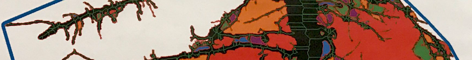

Software
For my research I rely greatly on a wide range of software and image analysis tools developed by computer specialists. Using these greatly increase throughput, accuracy and reproducibility in plant phenotyping. Below I provide links to all of the software I commonly use and how I use them.
Before embarking on any project I strongly recommend checking out plant-image-analysis.org as it is a central resource maintained by @guillaumelobet for available software and datasets.
RhizoVisionAnalyzer
Automatic root crown analysis software for quantification of shovelomics crown traits.
FREE DOWNLOAD

PRIMAL
Machine learning pipeline (Random Forest) bundled into a R Shiny app for root system architecture.
FREE DOWNLOAD

RootNav
Semi-automatic software for quantification of 2D root system architecture. I have used RootNav for processing multiple mapping populations grown on hydroponic pouches. This approach is partoculary useful for rooot angle determination.
FREE DOWNLOAD

CellSeT
Semi-automatic software for quantifying root anatomy by segmenting out plant cells and assigning cell classes.
FREE DOWNLOAD

RooTrak
3D Root segmentation software for X-ray Micro Computed Tomography (µCT) scanned plants.
FREE DOWNLOAD

RooTh
3D Root skeletonisation and root system quantification software for X-ray Micro Computed Tomography (µCT) scanned plants.
FREE DOWNLOAD

OpenSimRoot
3D Root simulation software that can integrate X-ray Micro Computed Tomography (µCT) & MRI scanned plants.
FREE DOWNLOAD

Fiji is just imageJ
Fiji is an image processing package, basically imageJ bundled with a lot of plugins which facilitate scientific image analysis. I personally use it to batch transform images (eg. crop, colour threshold) using the macro feature. There are many applications including measuring, skeletonisation and adding scale bars to images.
See My Code for my Fiji macro code repository.
FREE DOWNLOAD

RStudio
Statistics program for data processing and graphing. RStudio makes R easier to use. Notable packages inlcude "tidyverse" and "qtl".
See My Code for my R code repository.
FREE DOWNLOAD

Lab Mate - Molarity & Dilution This is a simple iPhone app that I made for calculating molarities and making dilutions, free download on the app store